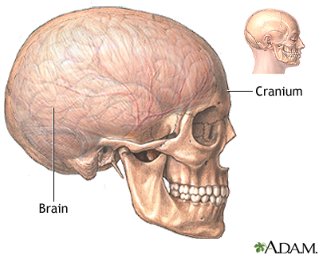
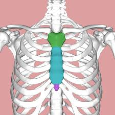
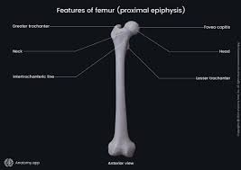
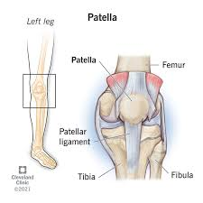

The cranium also known as the skull,protects the brain and supports facial structure.

The breastbone is a large,flat bone located in the chest.

The bone is located in the thigh and is the largest and strongest bone in the human body.

The Patella also known as the kneecap is a thick bone that moves with the femur.
For more information about the human body visit Human Skeleton Wikipedia Page